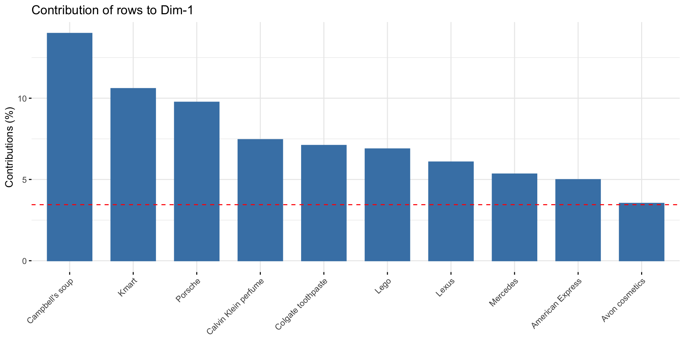

| Preferencia | Total | ||
|---|---|---|---|
| Frutas | Legumes | ||
| Sexo | |||
| Feminino | 20 (20%) | 23 (23%) | 43 (43%) |
| Masculino | 26 (26%) | 31 (31%) | 57 (57%) |
| Total | 46 (46%) | 54 (54%) | 100 (100%) |
Análise Multivariada
Análise de Correspondência
Prof. Washington Santos da Silva
IFMG - Campus Formiga
25 de outubro de 2023
Ambiente Virtual de Aprendizagem
-
Lembre-se que a sala virtual da disciplina está disponível no AVA (Moodle) do IFMG:
Summário: Aula em 25/10
- Motivação da Análise de Correspondência
- Tabela de Contingência
- Teste de Qui-Quadrado de Associação entre Variáveis Categóricas
- Análise de Correspondência em R
R Notebook
Por favor criem um R Notebook no RStudio e o nomeiem como
analise_correspondencia.Rmd-
Você pode criar um novo notebook no RStudio usando o menu principal:
File -> New File -> R Notebook
-
Trechos de código podem ser inseridos usando o seguinte atalho do teclado:
- Ctrl + Alt + I (Windows/Linux)
- or pelo menu
Insert a new code chunk.
Vamos criar juntos o R Notebook para esta aula.
Análise de Correspondência: Motivação
A Análise de Correspondência é uma das técnicas mais mágicas em análise de dados.
Ela resume os padrões em uma (grande) tabela de dados categóricos em gráficos que facilitam a interpretação: o biplot, é um deles.
Considere a tabela de contingência no próximo slide.
-
É uma grande tabela composta por 42 linhas, cada uma representando uma marca diferente, e 15 colunas representando atributos das marcas.
- O que você pode ver? Nada salta à vista.
- É necessário esforço para encontrar um padrão.
Dados
Visualizacão da Análise de Correspondência
Embora o gráfico seja um pouco confuso para um iniciante, ele é, como veremos, muito mais fácil de interpretar do que a tabela.
Tabela de Contingência
Uma tabela de contingência é uma ferramenta fundamental na análise de dados categóricos.
É usada para organizar e resumir dados categóricos em um formato tabular.
A tabela de contingência é composta por linhas e colunas.
As linhas representam uma variável categórica.
As colunas representam outra variável categórica.
Tabela de Contingência
Suponha que temos dados sobre a preferência alimentar de 100 pessoas.
E queremos analisar as preferências das pessoas entre frutas e legumes.
Uma tabela de contingência para este estudo seria a Tabela do próximo slide.
Tabela de Contingência
Usos de Tabelas de Contingência
Teste de Qui-Quadrado para Independência.
Análise de Correspondência.
Isto é, tabelas de continência são um insumo básico para a análise de associações entre variáveis categóricas.
Teste Qui-Quadrado de Associação
\[ \chi^2 = \sum \frac{(O_{ij} - E_{ij})^2}{E_{ij}} \]
sendo:
\(\chi^2\) a estatística de teste qui-quadrado.
\(O_{ij}\) a frequência observada na célula \((i, j)\).
\(E_{ij}\) a frequência esperada na célula (i, j).
Teste Qui-Quadrado de Associação
Passo 1: Calcula-se as médias das linhas e das colunas
Passo 2: Calcula-se a frequência esperada de cada célula da tabela:
Passo 3: Calcula-se a estatística \(\chi^2\), que é a soma ao quadrado dos resíduos divividas pelas frequências esperadas de cada célula
Passo 4: Calcula-se e interpreta-se o valor-p do teste, que é a probabilidade de observarmos o valor calculado de \(\chi^2\) se a hipótese nula de ausência de associação entre linhas e colunas for verdadeira.
-
Regra de decisão alterantiva:
\(valor-p < 0.05\), os dados fornecem evidência de que há associação entre as linhas e colunas.
\(valor-p > 0.05\), os dados fornecem evidência de que não há associação entre as linhas e colunas.
Teste Qui-Quadrado de Associação
Os resíduos são calculados subtraindo os valores esperados dos dados originais.
Esses resíduos estão no centro da Análise de Correspondência.
Os resíduos mostram as associações entre os variáveis nas linhas e nas colunas.
Grandes resíduos positivos indicam uma forte associação positiva, e o oposto é verdadeiro para grandes resíduos negativos.
Teste \(\chi^2\) e Análise de Correspondência
Em Análise de Correspondência temos o passo 5:
Passo 5: Plotar variáveis/indivíduos com resíduos semelhantes próxima(o)s uns dos outros.
Vejamos novamente o biplot dos dados sobre as marcas e atributos de personalidade no próximo slide
Resíduos do Teste \(\chi^2\) e Análise de Correspondência
Resíduos do Teste \(\chi^2\) e Análise de Correspondência
-
Compare os resíduos da Mercedz, American Express:
Embora os resíduos da American Express sejam geralmente um pouco maiores, estão na mesma direção os resíduos da Mercedz.
É possível perceber que, em termos de resíduos, American Express e Mercedz são muito semelhantes.
O mesmo raciocíno vale para Apple e Porcsh.
A posição relativa das demais empresa no gráfico é consistente com as semelhanças de seus respectivos resíduos.
Resíduos do Teste \(\chi^2\) e Análise de Correspondência
Agora veja como as variáveis (colunas) da tabela são representadas no biplot.
Os resíduos dos atributos pés no chão e alegria tem tamanho parecido, e é por isso que estão próximos um do outro no mapa.
A característica menos semelhante a pés no chão é ousadia, e é por isso que esses atributos estão em lados opostos do mapa.
Resíduos do Teste \(\chi^2\) e Análise de Correspondência
Agora observe a variancia explicada exibida nos eixos do biplot.
A dimensão horizontal explica 34,4% da variação dos dados enquanto a dimensão vertical explica apenas 22,2%.
A variância relativa explicada pelas dimensões é relavitivamente baixa, isso não é bom, ou seja, esse mapa não consta toda a história da associação entre linhas e colunas.
Quanto maior a variância explicada pelas dimensões, mais completa e mais precisas são as associacões e as interpretações.
Análise de Correspondência em R
O arquivo
brands_ac.rdscontém a tabela de contingência entremarcaseatributos de personalidadedas marcas exibida anteriormente.É um tipo muito comum de pesquisa de marketing.
Importando os dados
url <- "https://github.com/washingtonsilva/analise_multivariada_2023_bacharelado/raw/main/dados_clean/brands_ac.rds"
brands_ac <- readr::read_rds(url)
brands_ac atributos
marcas Charme Alegria Ousadia Pés no chão Honestidade
American Express 20 9 15 10 14
Apple computers 25 27 23 14 27
Avon cosmetics 33 33 7 26 25
Calvin Klein perfume 59 25 50 7 13
Campbell's soup 22 30 8 62 50
Colgate toothpaste 20 45 13 51 56
Diet Coke 13 43 20 21 20
Guess jeans 20 18 36 8 6
Hallmark cards 58 57 6 28 51
IBM computers 11 10 16 12 26
Kmart 12 48 12 68 45
Kodak film 19 42 8 35 50
Lee jeans 12 22 24 40 14
Lego 9 51 9 45 49
Levi's jeans 27 35 49 47 31
Lexus 40 10 32 7 23
Mattel toys 15 62 7 24 28
McDonald's 10 64 10 33 15
Mercedes 52 23 39 6 35
Michelin tires 7 12 23 31 38
Nike athletic shoes 9 24 48 17 12
Oil of Olay lotion 46 20 11 29 33
Pepsi Cola 11 53 29 24 18
Porsche 50 24 76 5 35
Reebok athletic shoes 13 31 44 21 22
Revlon cosmetics 45 27 18 19 11
Sony televisions 22 24 27 18 35
Toyota 19 26 19 41 39
Visa 18 18 24 20 24
atributos
marcas Imaginação Inteligência Ao ar livre Confiança Animação
American Express 17 44 14 26 14
Apple computers 54 71 4 32 34
Avon cosmetics 20 10 6 23 7
Calvin Klein perfume 31 16 11 21 38
Campbell's soup 11 11 16 53 14
Colgate toothpaste 17 32 12 82 19
Diet Coke 26 9 35 31 29
Guess jeans 14 7 22 9 18
Hallmark cards 54 24 4 50 24
IBM computers 51 75 2 56 18
Kmart 17 17 30 46 13
Kodak film 33 38 54 67 16
Lee jeans 12 5 59 19 23
Lego 58 32 6 41 17
Levi's jeans 23 16 72 52 47
Lexus 29 49 32 42 24
Mattel toys 62 18 14 24 17
McDonald's 25 15 18 30 16
Mercedes 28 61 36 66 35
Michelin tires 14 41 66 55 31
Nike athletic shoes 43 21 80 38 54
Oil of Olay lotion 16 21 11 37 14
Pepsi Cola 33 6 37 29 36
Porsche 49 64 48 52 64
Reebok athletic shoes 41 27 87 41 55
Revlon cosmetics 30 13 9 31 14
Sony televisions 59 69 5 64 30
Toyota 33 41 64 66 36
Visa 18 44 22 61 26
atributos
marcas Sucesso Resistência Atualidade Classe alta Saudável
American Express 63 20 30 69 8
Apple computers 43 13 53 33 24
Avon cosmetics 23 6 20 6 26
Calvin Klein perfume 44 5 30 81 10
Campbell's soup 31 12 19 11 80
Colgate toothpaste 56 23 37 9 52
Diet Coke 48 10 43 6 17
Guess jeans 21 18 27 36 6
Hallmark cards 44 5 23 35 49
IBM computers 65 31 55 38 26
Kmart 45 12 29 3 45
Kodak film 50 12 33 17 29
Lee jeans 17 44 24 11 10
Lego 37 32 20 5 39
Levi's jeans 54 71 46 30 26
Lexus 50 25 48 76 13
Mattel toys 29 22 30 6 23
McDonald's 59 14 39 4 16
Mercedes 79 43 55 94 27
Michelin tires 40 79 29 33 17
Nike athletic shoes 50 58 54 40 16
Oil of Olay lotion 28 4 19 39 43
Pepsi Cola 37 11 38 7 13
Porsche 83 36 54 89 12
Reebok athletic shoes 50 54 51 30 17
Revlon cosmetics 42 6 32 38 25
Sony televisions 61 12 78 41 21
Toyota 56 59 48 15 36
Visa 69 28 52 40 18Teste de \(\chi^2\)
Para interpretar a análise de correspondência, o primeiro passo é avaliar se há uma dependência significativa entre as linhas e colunas.
Um método formal é usar o teste de \(\chi^2\) para examinar a associação entre variáveis de linha (marcas) e coluna (atributos):
Pearson's Chi-squared test
data: brands_ac
X-squared = 3841.8, df = 392, p-value < 2.2e-16- O valor-p é muito inferior a 0.05, o que fornece forte evidência de que existe associação entre as marcas e os atributos de personalidade indicados pelos respondentes da pesquisa.
Análise de Correspondência
Vamos utilizar a função CA do pacote factoMineR para executar a Análise de Correspondência:
Call:
FactoMineR::CA(X = brands_ac, graph = FALSE)
The chi square of independence between the two variables is equal to 3841.76 (p-value = 0 ).
Eigenvalues
Dim.1 Dim.2 Dim.3 Dim.4 Dim.5 Dim.6 Dim.7
Variance 0.102 0.076 0.036 0.031 0.011 0.007 0.006
% of var. 35.985 27.000 12.643 10.966 4.040 2.566 2.155
Cumulative % of var. 35.985 62.985 75.629 86.595 90.635 93.201 95.356
Dim.8 Dim.9 Dim.10 Dim.11 Dim.12 Dim.13 Dim.14
Variance 0.004 0.003 0.003 0.001 0.001 0.001 0.000
% of var. 1.277 1.233 0.988 0.504 0.348 0.201 0.094
Cumulative % of var. 96.633 97.865 98.854 99.358 99.705 99.906 100.000
Rows (the 10 first)
Iner*1000 Dim.1 ctr cos2 Dim.2 ctr cos2
American Express | 10.595 | -0.430 4.991 0.479 | -0.263 2.482 0.179
Apple computers | 8.272 | -0.110 0.415 0.051 | -0.296 4.028 0.371
Avon cosmetics | 6.700 | 0.424 3.530 0.535 | -0.244 1.555 0.177
Calvin Klein perfume | 18.327 | -0.483 7.452 0.413 | -0.339 4.891 0.203
Campbell's soup | 21.229 | 0.671 13.988 0.670 | -0.094 0.366 0.013
Colgate toothpaste | 10.186 | 0.433 7.096 0.708 | -0.085 0.361 0.027
Diet Coke | 4.645 | 0.138 0.514 0.113 | 0.156 0.871 0.143
Guess jeans | 6.779 | -0.417 3.349 0.502 | 0.093 0.223 0.025
Hallmark cards | 12.027 | 0.288 3.078 0.260 | -0.392 7.573 0.480
IBM computers | 10.905 | -0.134 0.636 0.059 | -0.254 3.051 0.213
Dim.3 ctr cos2
American Express | -0.140 1.507 0.051 |
Apple computers | -0.213 4.453 0.192 |
Avon cosmetics | 0.237 3.129 0.167 |
Calvin Klein perfume | 0.452 18.584 0.362 |
Campbell's soup | 0.080 0.569 0.010 |
Colgate toothpaste | -0.117 1.485 0.052 |
Diet Coke | 0.120 1.091 0.084 |
Guess jeans | 0.339 6.306 0.332 |
Hallmark cards | 0.187 3.697 0.110 |
IBM computers | -0.449 20.407 0.668 |
Columns (the 10 first)
Iner*1000 Dim.1 ctr cos2 Dim.2 ctr cos2
Charme | 21.917 | -0.117 0.715 0.033 | -0.418 12.087 0.420
Alegria | 23.790 | 0.418 11.557 0.494 | -0.008 0.006 0.000
Ousadia | 16.867 | -0.432 9.510 0.573 | 0.156 1.640 0.074
Pés no chão | 25.282 | 0.592 19.512 0.784 | 0.163 1.963 0.059
Honestidade | 11.628 | 0.353 7.632 0.667 | -0.100 0.809 0.053
Imaginação | 14.850 | 0.041 0.109 0.007 | -0.156 2.156 0.111
Inteligência | 20.739 | -0.203 2.686 0.132 | -0.260 5.854 0.215
Ao ar livre | 34.698 | -0.134 1.136 0.033 | 0.685 39.576 0.870
Confiança | 7.381 | 0.140 1.752 0.241 | -0.044 0.235 0.024
Animação | 7.879 | -0.210 2.491 0.321 | 0.183 2.526 0.244
Dim.3 ctr cos2
Charme | 0.404 24.088 0.392 |
Alegria | 0.222 9.254 0.139 |
Ousadia | 0.238 8.230 0.174 |
Pés no chão | 0.073 0.850 0.012 |
Honestidade | -0.077 1.031 0.032 |
Imaginação | -0.050 0.472 0.011 |
Inteligência | -0.436 35.181 0.606 |
Ao ar livre | 0.094 1.600 0.016 |
Confiança | -0.152 5.937 0.287 |
Animação | 0.102 1.693 0.077 |Proporção da Variância Explicada
Como na análise de componentes principais, estamos interessados na proporção da variância explicada por cada dimensão calculada pela análise de correspondência.
Novamente, podemos determinar o número de dimensões pelo
Scree Plot, que é um gráfico das variâncias (autovalores) ordenadas.Vamos utilizar a função
fviz_screeplotdo pacotefactoextrapara gerar o scree plot.
Proporção da Variância Explicada
Proporção da Variância Explicada
Proporção da Variância Explicada
Observe que uma boa redução de dimensão é alcançada quando as primeiras dimensões representam uma grande proporção da variabilidade.
Em nossa análise, as cinco primeiras dimensões explicam 90,6% da variação.
O número de dimensões é determinado no ponto além do qual as variâncias restantes são todas relativamente pequenas.
O ponto em que o Scree Plot forma um curva “cotovelo” pode ser considerado como indicando uma dimensionalidade ideal.
Neste caso, 5 ou 6 dimensões seriam adequadas.
Biplot
- Vamos utilizar a função
fviz_ca_biplotdo pacotefactoextrapara construir um biplot que exibe simultaneamente as variáveis/colunas (atributos) e os indivíduos/linhas (marcas)
Biplot

Interpretação
No canto inferior esquerdo, podemos ver que Calvin Klein, American Express, Apple e Lexus são associadas à
Classe alta.Porsche mistura
Classe AltaeOusadia.No canto superior esquerdo, podemos ver que
Resistênciaé compartilhada pela Nike, Reebok, Levi’s e Michelin, que também são um pouco associadas a atividadesAo ar livre.
Interpretação
Uma dica importante para quem inicia o uso da análise de correspondência:
Quanto mais próximo algo estiver do centro do mapa, menos distinto ele será.
Assim, neste mapa, podemos ver que a marca Qantas é mal descrita por qualquer um dos atributos.
Da mesma forma,
Bem-sucedidoeImaginativosão atributos de personalidade que não são bons diferenciadores entre as marcas.
Interpretação
Também podemos ver que uma espécie de continuum é evidente nos dados:
Vai de
Classe altaeInteligênciano canto inferior esquerdo, atéAlegriaePés no chãono canto superior direito.
Contribuição das linhas/indivíduos
A contribuição das linhas (em %) para a definição das dimensões pode ser extraída da seguinte seguinte:
Contribuicoes das linhas para dimensao 1:
Contribuição das linhas/indivíduos

Contribuição das linhas/indivíduos
- Contribuicoes das linhas para dimensao 2:
Contribuição das linhas/indivíduos
As linhas que mais contribuem para Dim.1 e Dim.2 são as mais importantes para explicar a variabilidade no conjunto de dados.
Linhas que não contribuem muito para nenhuma dimensão ou que contribuem para as últimas dimensões são menos importantes.
Análise de Correspondência: Dicas de Interpretação
Quanto mais longe as variáveis e indivíduos estão da origem, mais discriminativas elas são, provavelmente.
Quanto mais próximas as variáveis e indivíduos estão da origem, menos distintas são, provavelmente.
Quanto mais variação for explicada, menos insights serão perdidos, Por quê?.
A proximidade entre as indivíduos provavelmente indica similaridade entre elas.
Análise de Correspondência: Dicas de Interpretação
A proximidade entre as variáveis provavelmente indica similaridade entre elas.
A proximidade entre as variáveis e indivíduos provavelmente indica associação entre elas, e vice-versa.
Análise de Correspondência Múltipla
- Se a tabela de contingência envolve mais de duas variáveis categóricas, deve-se aplicar os métodos da Análise de Correspondência Múltipla.